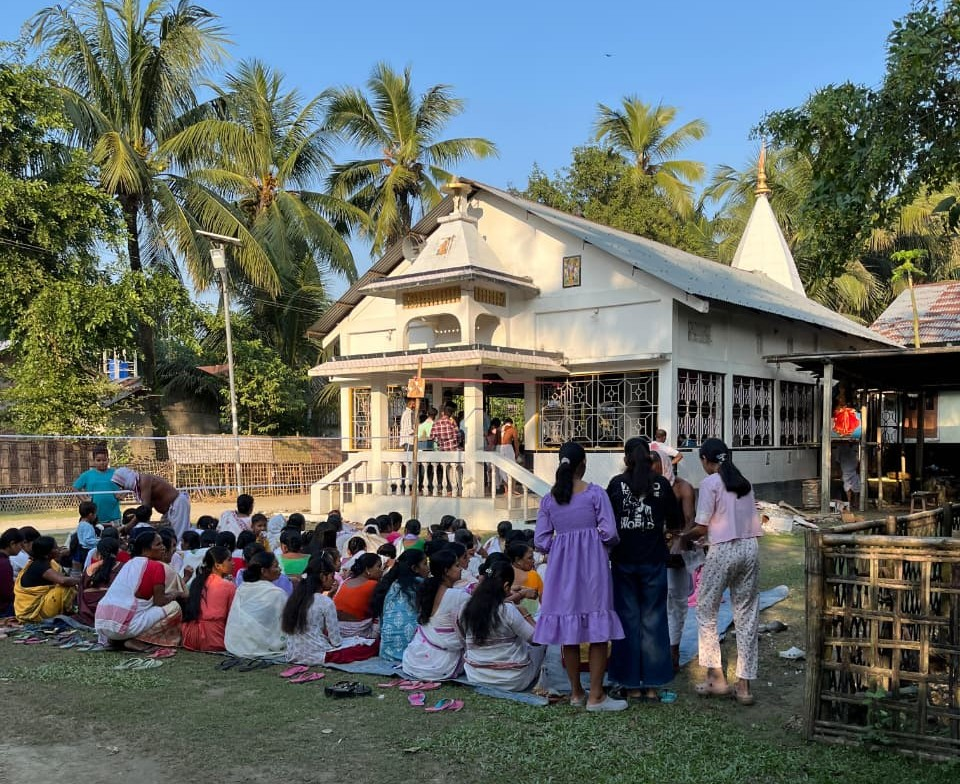
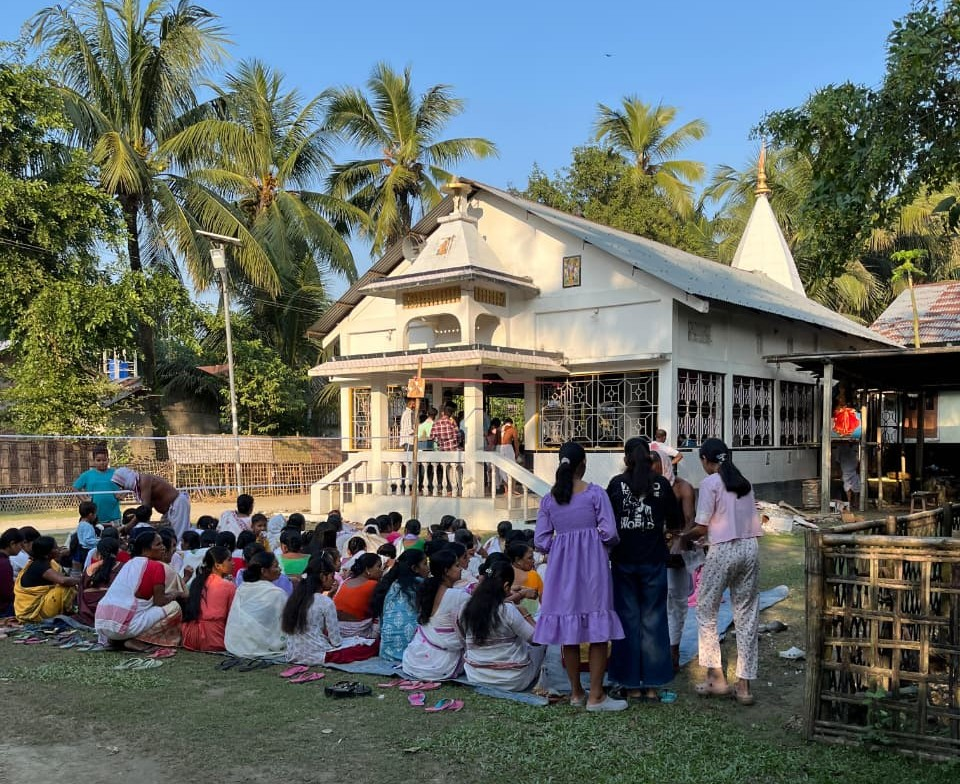

Mugdi is one of the oldest villages in the Nalbari district and has been celebrating Bihu for over a century. Over time, the number of festivals observed here has increased significantly due to the village’s diverse cultural background. Apart from Hindu traditions, the Boro tribe also contributes to the vibrant festival culture. Additionally, the presence of a small Muslim community means that Eid is celebrated with equal enthusiasm. These festivals bring together people from different cultures and religions, fostering unity and strengthening social bonds within the community.
For a detailed understanding, scroll down for an in-depth explanation.

 

Bihu
Mugdi is well-known in the region for its Bihu celebrations, not because of grandeur or scale, but due to its long-standing historical significance. Bihu has been celebrated here for over 100 years, making it an important cultural tradition in the area.
Bohag Bihu: Bohag Bihu in Mugdi is celebrated across both Notun Supa and Puran Supa. Earlier, the celebrations used to alternate between the two – one year in Notun Supa, the next in Puran Supa. However, in the last two years, all three supas have begun celebrating the festival together, strengthening community bonds and making the celebrations more vibrant.
Kati Bihu: Kati Bihu is celebrated separately in both supas, though the rituals remain quite similar. Throughout the month of Kati, Nam Kirtan is performed daily at the public temples in both areas, bringing together devotees in spiritual gatherings.
Magh Bihu: Magh Bihu is celebrated in the traditional way, staying true to documented customs. Both supas invite performers such as Nagra Man, local drama (Natok), and sometimes singers to enhance the festive spirit and bring entertainment to the community.
Through these celebrations, Mugdi continues to preserve its cultural heritage and strengthen ties among its diverse community.
Lakshmi Puja
Lakshmi Puja is celebrated with great enthusiasm in Mugdi, particularly in Notun Supa. The festival is marked by the decoration of houses with traditional motifs and the lighting of lamps to welcome the goddess of wealth and prosperity. In recent years, the celebrations have become more elaborate, with community gatherings and cultural programs organized to enhance the festive spirit. The puja not only serves as a religious observance but also as an opportunity for social bonding among the villagers, reflecting the harmonious coexistence of different cultural practices in Mugdi.
Shiv Ratri
Shiv Ratri is another significant festival celebrated in Mugdi, particularly in Puran Supa. The festival is dedicated to Lord Shiva and is observed with various rituals and ceremonies. Devotees gather at local temples to offer prayers and perform special rituals throughout the night. The celebration includes singing devotional songs, lighting lamps, and sometimes organizing community feasts. Shiv Ratri in Mugdi serves as a spiritual occasion that brings together people from different backgrounds, fostering a sense of unity and shared cultural heritage within the village.
Manasha Puja
Manasha Puja is celebrated in Mugdi, especially in Boro Supa, with the Boro community leading the festivities while the entire village participates. The festival is observed once a year and alternates between villages one year in Mugdi and the next in the nearby village of Narua. It is celebrated to seek the blessings of the goddess Manasha, who is believed to protect people from snake bites and bring well-being to the community. Rituals include community gatherings, offerings, and prayers performed at local temples or designated spaces. The celebration of Manasha Puja reflects the village’s diverse culture and the role of traditional practices in bringing people together.